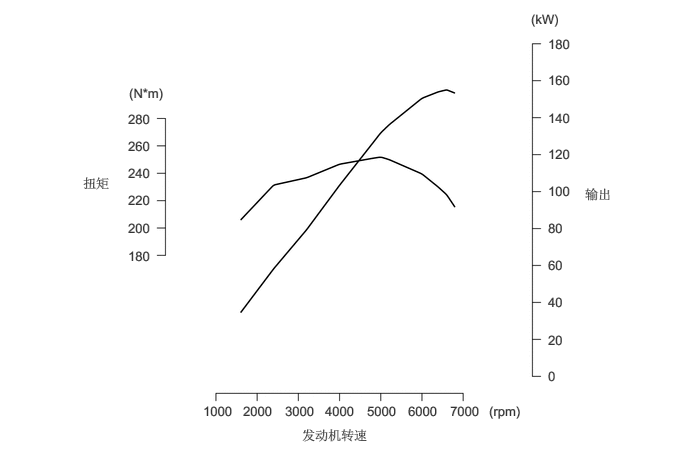
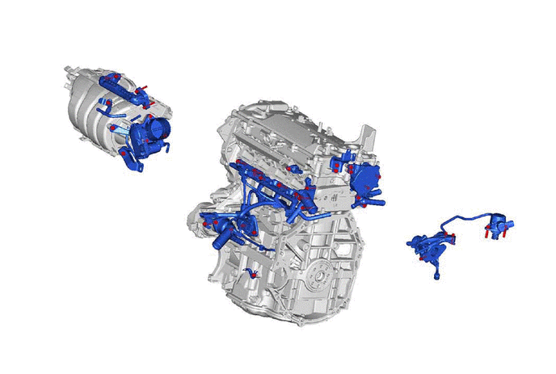
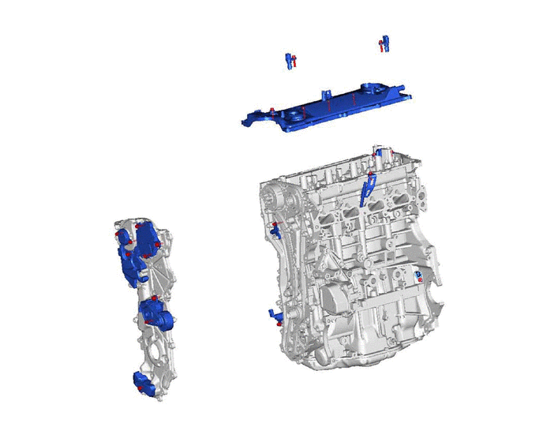
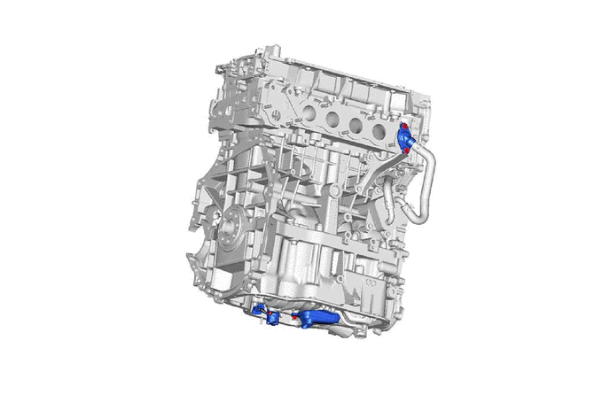

概要
A25A-FKS 发动机为直列 4 缸、2.5 升、16 气门 DOHC 发动机。
该发动机采用双智能可变气门正时（双 VVT-i）系统，通过使用电动机驱动进气凸轮轴执行器和发动机机油压力驱动排气凸轮轴执行器，从而实现最佳气门正时。此外，该发动机采用高膨胀比的阿特金森循环、直接喷射 4 行程汽油发动机高级版 (D-4S) 系统、直接点火系统 (DIS)、智能电子节气门控制系统（ETCS-i）和采用高效 EGR 冷却器的废气再循环 (EGR) 系统。这样便提高了发动机性能、增强了静谧性、改善了燃油经济性并实现了更清洁的排放。
规格
| 发动机类型 | A25A-FKS | ||
|---|---|---|---|
|
*1：排放标准根据车辆规格的不同而有所不同。 *2：所示数值为未加注冷却液和机油时零件的重量。 |
|||
| 气缸数和排列形式 | 4 缸、直列 | ||
| 气门机构 | 16 气门 DOHC、链条传动
（带 VVT-iE 和 VVT-i） |
||
| 燃烧室 | 屋脊式 | ||
| 进气和排气流量 | 横流式 | ||
| 燃油系统 | 顺序多点燃油喷射 (SFI) D-4S | ||
| 点火系统 | 直接点火系统 (DIS) | ||
| 排量 | cm3 (cu. in.) | 2487 (151.8) | |
| 缸径 x 行程 | mm (in.) | 87.5 x 103.4 (3.44 x 4.07) | |
| 压缩比 | 13.0 : 1 | ||
| 最大输出功率 (EEC) | kW@rpm | 154@6600 | |
| 最大扭矩 (EEC) | N*m@rpm | 250@5000 | |
| 气门正时 | 进气 | 打开 | -30° 至 40° BTDC |
| 关闭 | 110° 至 40° ABDC | ||
| 排气 | 打开 | 19° 至 60° BBDC | |
| 关闭 | 41°至 0°ATDC | ||
| 火花塞 | 类型 | 电装公司制造 | FC16HR-Q8 |
| 火花塞间隙 | mm (in.) | 0.7 至 0.8（0.0276 至 0.0315） | |
| 点火顺序 | 1 - 3 - 4 - 2 | ||
| 研究法辛烷值 | 92 或更高 | ||
| 排放标准*1 | 国 V
国 6 |
||
| 发动机使用质量*2（参考） | kg (lb) | 121.6 (268) | |

主要特征
通过采用下表所列项目，A25A-FKS 发动机实现了以下性能。
高性能和可靠性
噪音低且振动小
轻量化且紧凑的设计
维护方便性
清洁排放和高燃油经济性
| 项目 | i | ii | iii | iv | v | |
|---|---|---|---|---|---|---|
|
○：适用 -：不适用 |
||||||
| 采用高膨胀比阿特金森循环。 | ○ | - | - | - | ○ | |
| 发动机特性 | 采用铝制气缸体分总成。 | - | - | ○ | - | - |
| 气缸孔内采用刺型缸套。 | ○ | - | - | - | - | |
| 采用气缸体水套隔垫。 | ○ | - | - | - | ○ | |
| 活塞裙部涂有树脂。 | ○ | ○ | - | - | ○ | |
| 采用偏置曲轴。 | ○ | ○ | - | - | ○ | |
| 进气侧采用激光熔覆气门座。 | ○ | - | - | - | ○ | |
| 采用树脂齿轮发动机平衡器总成。 | - | ○ | ○ | - | - | |
| 采用由正时链条盖总成和 2 号正时链条盖总成组成的链条盖。 | ○ | - | - | - | - | |
| 采用了具有相同螺纹直径但头部比标准螺栓小的螺栓。 | ○ | - | ○ | - | - | |
| 气门机构 | 进气凸轮轴采用电动机控制的智能可变气门正时 (VVT-iE) 系统。 | ○ | - | - | - | ○ |
| 排气凸轮轴采用智能可变气门正时 (VVT-i) 系统。 | ○ | - | - | - | ○ | |
| 采用链条分总成和 1 号链条张紧器总成。 | - | ○ | - | ○ | - | |
| 采用气门间隙调节器总成。 | ○ | ○ | - | ○ | - | |
| 采用 1 号气门摇臂分总成。 | ○ | - | - | - | ○ | |
| 润滑系统 | 采用了筒式机油滤清器分总成。 | - | - | - | ○ | - |
| 采用了电子控制可变排量机油泵。 | ○ | - | - | - | ○ | |
| 采用发动机机油油位传感器。 | - | - | - | - | ○ | |
| 采用了发动机机油冷却器（机油冷却器总成）。 | ○ | - | - | - | - | |
| 冷却系统 | 采用丰田原厂超级长效冷却液 (SLLC)。 | - | - | - | ○ | - |
| 采用可变通道冷却系统。 | ○ | - | - | - | ○ | |
| 采用电动发动机水泵总成。 | - | - | - | - | ○ | |
| 进气和排气系统 | 采用塑料制成的进气歧管。 | - | ○ | ○ | - | - |
| 采用带电动机的无连杆式节气门体总成。 | - | - | ○ | ○ | - | |
| 采用不锈钢排气歧管总成。 | - | - | ○ | - | - | |
| 排放控制系统 | 采用步进电动机型废气再循环 (EGR) 阀。 | ○ | - | - | - | ○ |
| 采用水冷型废气再循环 (EGR) 冷却器。 | ○ | - | - | - | ○ | |
| 采用超薄壁、高窝孔密度陶瓷型三元催化转化器 (TWC)。 | - | - | - | - | ○ | |
| 燃油系统 | 采用直接喷射 4 行程汽油发动机高级版 (D-4S) 系统。 | ○ | - | - | - | ○ |
| 采用无回流燃油系统。 | - | - | ○ | ○ | ○ | |
| 采用快速连接器以连接燃油软管和燃油管。 | - | - | - | ○ | - | |
| 采用了 10 孔型低压进气口喷射喷油器总成。 | ○ | - | - | - | ○ | |
| 采用了 6 孔型高压直接喷射喷油器总成。 | ○ | ○ | - | - | ○ | |
| 点火系统 | 采用直接点火系统 (DIS)。 | ○ | - | - | ○ | ○ |
| 采用加长型铱尖火花塞。 | ○ | - | - | ○ | ○ | |
| 蛇形带传动系统 | 采用蛇形带传动系统。 | - | - | ○ | ○ | - |
| 发动机控制系统 | 采用了磁阻元件 (MRE) 型凸轮轴位置传感器和曲轴位置传感器。 | ○ | - | - | - | ○ |
| 采用智能电子节气门控制系统 (ETCS-i)。 | ○ | - | - | - | ○ | |
| 采用起动保持功能。 | ○ | - | - | - | - | |
| 采用燃油蒸汽排放控制系统。 | - | - | - | - | ○ | |
小头螺栓的位置


